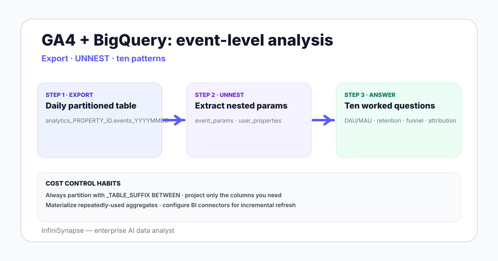

Google Analytics with BigQuery in 2026: Data Analysis Capabilities
Google Analytics + BigQuery data analysis in 2026 — what the export unlocks, schema basics, ten worked questions, dialect quirks, and where AI data agents fit.
AuthorInfiniSynapse Research, product and data architecture team
Published2026-06-28 · Last verified 2026-06-28 · Next review 2026-09-28
Evidence baseGoogle Analytics 4 BigQuery export documentation, BigQuery dialect reference, public GA4 schema guides, hands-on usage across SaaS and ecommerce teams in 2026.
Disclosure: Published by InfiniSynapse, which sells an AI data analyst that connects to BigQuery including GA4 export datasets. The guide is vendor-neutral on the analysis methods.
TL;DR
The GA4 BigQuery export lands one row per event in a partitioned events table — full event-level granularity that the GA4 UI does not expose.
Most analytical work involves UNNESTing event_params and user_properties arrays to reach the values you actually care about.
Ten worked questions cover most weekly use — DAU/MAU, retention curves, funnel analysis, attribution, channel performance, custom event rates, page-level engagement, scroll depth, search query analysis, and revenue by source.
AI data agents on top of GA4 BigQuery skip the UNNEST boilerplate for ad-hoc questions and emit a verification step appropriate for the dataset.
GA4 BigQuery export lands one row per event in a partitioned table — full event-level data the GA4 UI hides. Most queries UNNEST event_params and user_properties to reach values. Ten patterns cover most work; BigQuery cost depends on partition scanning. AI data agents speed up ad-hoc work on top.

The GA4 BigQuery event table schema
Each GA4 property linked to BigQuery exports to a dataset named analytics_PROPERTY_ID. Inside it, daily tables named events_YYYYMMDD hold one row per event. Streaming export (intraday) lands in events_intraday_YYYYMMDD.
Field
Type
Notes
event_date
STRING
Format YYYYMMDD
event_timestamp
INT64
Microseconds since epoch
event_name
STRING
page_view, purchase, custom_event_name, etc.
event_params
ARRAY<STRUCT>
Key-value pairs — needs UNNEST to read
user_pseudo_id
STRING
Anonymous client identifier
user_properties
ARRAY<STRUCT>
Set via setUserProperties — needs UNNEST
device, geo, traffic_source
STRUCT
Nested structs, accessed by dot notation
ecommerce, items
STRUCT, ARRAY
Purchase event details
The UNNEST pattern every GA4 query uses
-- Extract a parameter value from event_params
SELECT
event_date,
event_name,
(SELECT value.string_value FROM UNNEST(event_params)
WHERE key = 'page_location') AS page_location,
(SELECT value.int_value FROM UNNEST(event_params)
WHERE key = 'engagement_time_msec') AS engagement_ms
FROM `project.analytics_PROPERTY_ID.events_*`
WHERE _TABLE_SUFFIX BETWEEN '20260601' AND '20260628'
AND event_name = 'page_view';
Three things to remember: _TABLE_SUFFIX is how you partition the date range, (SELECT ... FROM UNNEST(...)) is the canonical extraction shape, and choosing the right value.* field type (string_value, int_value, double_value, float_value) matters for each parameter.
Ten worked questions on GA4 BigQuery
DAU / WAU / MAU. COUNT(DISTINCT user_pseudo_id) by day, week, month.
Retention curve by signup cohort. First-seen date as cohort key; activity by week-N offset.
Funnel analysis. Sequence event_name occurrences per user_pseudo_id with LAG or ROW_NUMBER OVER (PARTITION BY user_pseudo_id ORDER BY event_timestamp).
Attribution audit. traffic_source.source / medium for the first session vs the converting session per user.
Channel performance. Group by traffic_source.medium; aggregate conversions and revenue.
Custom event rates. COUNT custom_event_name / COUNT page_view, by segment.
Page-level engagement. UNNEST event_params for page_location and engagement_time_msec, AVG by page.
Search query analysis. Site search events, UNNEST for query parameter, rank by frequency.
Revenue by source. Purchase events, ecommerce.purchase_revenue, by traffic_source.
These ten cover the majority of weekly analyst work on a GA4 BigQuery dataset. The companion marketing data analysis playbook explains how these feed business-level KPIs.
BigQuery cost notes for GA4 work
Partition scanning. Always use _TABLE_SUFFIX BETWEEN in your WHERE; without it, BigQuery scans every daily table from day 1.
SELECT * costs. The GA4 events table is wide and nested. Project only the columns you need.
Materialized aggregates. If you re-run the same daily aggregation many times, write the result to a separate table and query that.
BI tool defaults. Tableau and Looker can issue large scans if connectors are not configured for incremental refresh.
Three patterns where an AI data analyst earns the seat on a GA4 BigQuery dataset:
UNNEST boilerplate. Every GA4 query needs the UNNEST pattern. An agent drafts the SQL with the correct extraction shape from a plain-English question.
Cross-property analysis. A team with three GA4 properties — main site, marketing site, app — runs the same question across all three datasets. The agent handles the UNION and renaming.
Ad-hoc anomaly investigation. "Why did engagement drop on iOS Wednesday?" — the agent UNNESTs the right params, segments by device, and returns a chart with the SQL.
GA4 BigQuery hands you full event-level data — the UNNEST boilerplate is the friction. AI agents remove the friction without removing the analyst.
Ask GA4-shaped questions across your BigQuery export
Connect your GA4 BigQuery dataset read-only. Seed a small knowledge base of event definitions — what counts as engagement, which custom events drive conversion. Then ask one open-ended question and read the plan, UNNEST SQL, and verification step before deciding.
The GA4 BigQuery export lands one row per event in a daily partitioned table named events_YYYYMMDD inside a dataset called analytics_PROPERTY_ID. Each row contains the event date, event name, event timestamp in microseconds, the user pseudo identifier, a nested event_params array, a nested user_properties array, and structs for device, geo, traffic source, and ecommerce details. Streaming export to events_intraday_YYYYMMDD is also available.
Why do GA4 BigQuery queries always use UNNEST?
The event_params and user_properties fields are arrays of key-value structs in BigQuery, which means a single event row holds multiple parameters at once. To read a specific parameter like page_location or engagement_time_msec, you UNNEST the array and filter by key, returning the value of the matching field type — string_value, int_value, double_value, or float_value. The pattern repeats in nearly every GA4 BigQuery query.
How do I control BigQuery cost on GA4 datasets?
Four habits cover most cost control: always restrict the partition scan with _TABLE_SUFFIX BETWEEN dates in WHERE so BigQuery scans only the relevant days, project only the columns you actually need rather than SELECT *, materialize repeatedly-used daily aggregates into a separate table you query instead, and configure BI tool connectors for incremental refresh rather than full reload on each dashboard view.
What questions does GA4 BigQuery export answer that the GA4 UI does not?
Three classes: event-level analysis that the UI aggregates away (per-user event sequences, custom funnel definitions with arbitrary steps); long retention windows beyond the GA4 UI thresholds; and cross-source joins where GA4 data sits next to CRM, payment, or other warehouse tables in BigQuery. The UI is for standing reports; the BigQuery export is for the analytical questions outside that envelope.
How do I do funnel analysis in GA4 BigQuery?
Project the events you care about per user, use ROW_NUMBER OVER (PARTITION BY user_pseudo_id ORDER BY event_timestamp) to sequence them, and self-join or use LAG to find users who hit step N and then step N+1 within a time window. The shape repeats for each funnel step. Materializing per-user event sequences once and reusing them across funnel queries cuts the cost.
How does an AI data agent help with GA4 BigQuery analysis?
Three patterns: drafting the UNNEST boilerplate from a plain-English question so the analyst reviews rather than types it, handling cross-property analysis when a team has three GA4 properties and wants the same question across all of them with UNION and renaming, and ad-hoc anomaly investigation where the agent picks the right segment splits and returns a chart with the SQL and a verification step.
What is the GA4 BigQuery export schema?
The events table has event_date as a string in YYYYMMDD format, event_timestamp as INT64 microseconds since epoch, event_name as the event identifier including custom events, event_params as ARRAY STRUCT of key-value pairs, user_pseudo_id as the anonymous client identifier, user_properties as another ARRAY STRUCT, and nested STRUCTs for device, geo, traffic source, and ecommerce. Item-level purchase details sit in ARRAY items inside the ecommerce struct.
Methodology and review notes
Last updated: 2026-06-28 · Next scheduled review: 2026-09-28
This methods guide synthesizes Google Analytics 4 BigQuery export official documentation, the BigQuery SQL dialect reference, public GA4 schema guides from Google, and hands-on usage across SaaS and ecommerce teams in 2026. The ten-question pattern and cost-control habits reflect observed practice rather than vendor positioning.
Conflict of interest: InfiniSynapse publishes this guide and sells an enterprise AI data analyst. To reduce bias, the page leads with the topic itself, treats InfiniSynapse as one option among many, and links to external sources for every numeric claim.
Update cadence: Reviewed every 90 days for accuracy and link health.